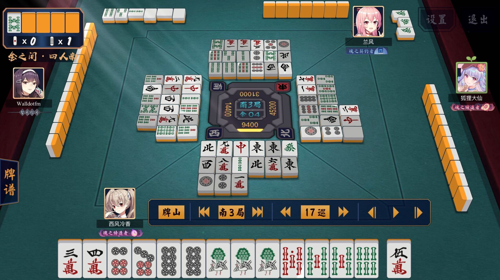

这是前天的一个吃四的牌谱，里面的关键一处：

这里到了南3局1本场的末巡，自己是四位，还有自己的海底，因此期待能够立直一发海底自摸D1，满贯。
但问题来了，是切 8p 立直呢，还是切 6s 立直呢？
如果单从剩余张数来看，58p 剩余 4 张，467s 剩余 2 张，看上去立 6s 会好一点。
但是，剩余张数 ≠ 山存张数！！！
从各家的切牌来看，基本上各家都不要 46s，因此剩余的 46s 虽然剩的少，但是基本上都在山里；而牌河中饼子出的很少，显然各家手里都捏着不少饼子，中张的5p应该基本上都在上家或者下家手里。特别是上家，牌河里一张饼子都没有。
因此，这里应该切 8p 立直，期待能够摸到山里的 46s！